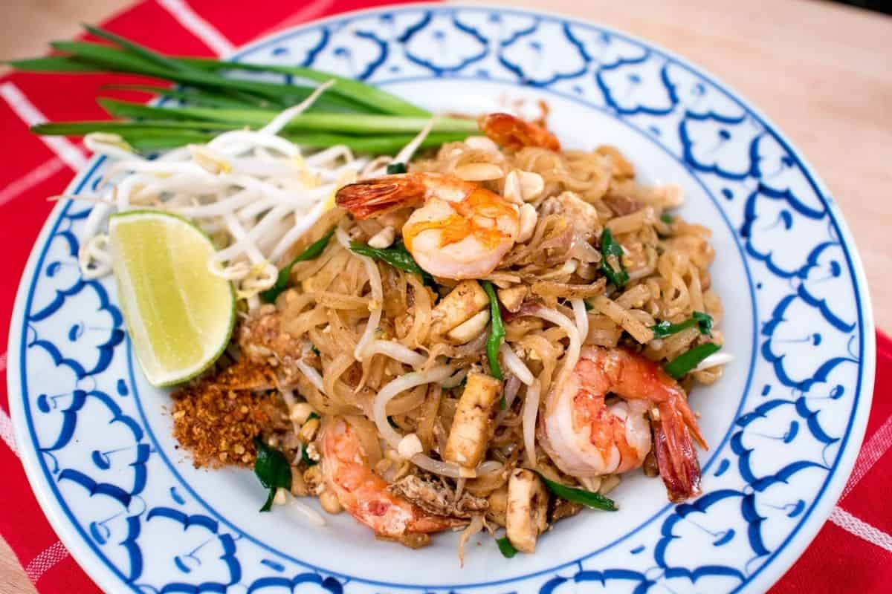

Thai Pad Thai

Traditional pad thai shrimp with all of the classic garnishes
Description
Take it from an avid traveller, it's hard to find a really good, authentic pad thai outside of Thailand.
I've searched high and low, and concluded that the best option is to master cooking it at home.
This recipe is the real deal with all the ingredients of a traditional pad thai—no compromise.
Ingredients
The Sauce
- 35 grams palm sugar, finely chopped
- ¼ cup tamarind paste/concentrate
- 2 Tbsp fish sauce
- 3 Tbsp water
Pad Thai
- 115 grams of dry rice noodles
- 8-10 shrimp, or as many as you'd like, peeled and deveined
- 1 tbsp vegetable or sunflower oil
- 1 small head shallot, thinly sliced, about 3 Tbsp
- 2 cloves garlic, chopped
- 1 Tbsp dried shrimp, chopped
- 1 pc pressed tofu, cut into small pieces
- ½ tsp of chili flakes, or to taste
- A scant ¼ cup of chopped sweet preserved daikon radish (see note)
- 2 eggs
- 2.5 cups bean sprouts
- 1 cup garlic chives, cut into 5cm pieces
- ¼ cup chopped roasted peanuts
- 1 lime